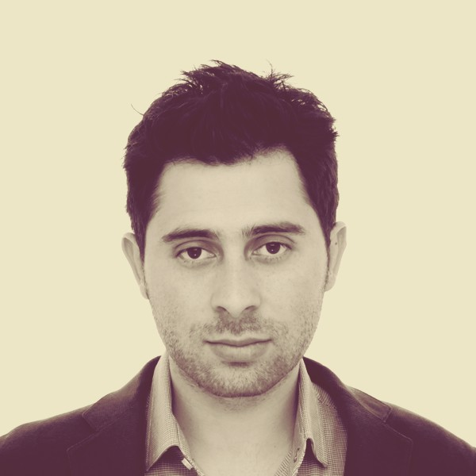

Software engineer specialising in applications for acoustic and environmental technologies. I focus on problem solving, computer networking, and applying core principles of software engineering and mathematics to build robust, user-focused solutions.
My work includes cross-platform development, cloud-based systems, Linux environments, smart system integration, and the design of complex information systems. I pay close attention to detail and aim to deliver consistent, elegant solutions that meet both technical demands and practical needs.
AI enthusiast with a keen interest in emerging technologies and their real-world applications.
Currently, I am working as a software engineer specialised in acoustic applications (noise and vibrations).
Education and Certifications
-
Professional Engineer - Highest Relevant Qualification & Relevant Skilled Employment Assessment
Engineers Australia
Issued Sep 2021 -
Swinburne University of Technology
Melbourne, Australia
Master of Information Technology (Software Development Specialisation), Computer Science
Jul 2025 - Jul 2027 -
U. de San Buenaventura, Bogotá
Bogotá, Colombia
5 years Bachelor of Engineering (Sound Engineering)
- Curriculum with a strong emphasis on applied mathematics and physics in sound engineering.
- Graduated with academic distinction. -
Danford College
Melbourne, Australia
Advanced Diploma of IT Security, Cybersecurity
Nov 2019 - Nov 2021 -
Danford College
Melbourne, Australia
Diploma of IT Networking, Information Technology -
Danford College
Melbourne, Australia
Advanced diploma of leadership and management -
Danford College
Melbourne, Australia
Certificate IV IT, Information Technology -
Servicio Nacional de Aprendizaje (SENA)
Bogotá, Colombia
Object Oriented Programming with C++ -
Servicio Nacional de Aprendizaje (SENA)
Bogotá, Colombia
Java Platform
Skills
Languages & Frameworks
- Modern C++
- Qt Framework
- Python
- JavaScript
Tools & Platforms
- CMake
- Linux (Debian)
- Git | Github | Gitlab
- Relational Databases (Postgres)
- Google Cloud Platform
- Firebase
- pybind11
Core Concepts
- Systems Analysis and Design
- Object-Oriented Programming
- OSI & TCP/IP Networking
- Probability and Statistics
- Discrete Mathematics
- Data Analysis
- Python/C++ Interoperability
Publications and jobs
- Methods for addressing variable turbine operations during wind farm noise compliance monitoring.
- Free Noise Map (FNM) - Multi-platform free environmental noise modelling software.
- Noise Modeling in Bogota environmental protection agency - Colombia.
- Kate Pdf Converter – open-source cross-platform tool that allows users to edit and convert images to pdf
-
Evaluación y gestión del ruido en aeropuertos colombianos (Noise assessment of airports in Colombia)
the ninth Iberoamerican Congress of acoustics - FIA - Valdivia Chile · Jan 1, 2014 -
Noise model in the central
zone of Bogota - capital city of Colombia
(Modelo acústico y mapa estratégico de ruido en zona central de la ciudad de Bogotá - capital de colombia)